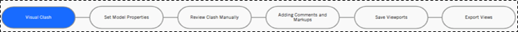
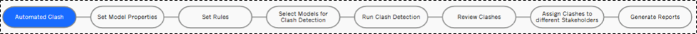
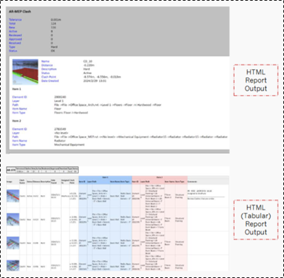
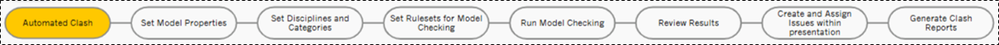
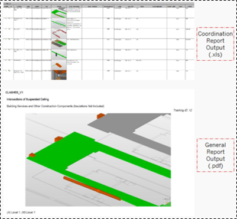
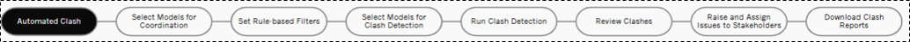

Collaborative BIM Project
Academic projects
Federated model creation (architectural, structural, MEP), clash detection and coordination.
Navisworks, Solibri, Autodesk Construction Cloud
Framework followed for clash detection using NavisWorks, Solibri and Autodesk Construction Cloud
PROJECT OVERVIEW
Aim:
The aim of this project is to develop a comprehensive federated BIM model by merging and appending architectural, structural, and MEP models of the same building using Autodesk NavisWorks and Solibri Office. The project will involve conducting thorough clash detection within the federated model, exploring the features and capabilities of both software applications, and documenting the process to understand the potential and limitations of clash detection in relation to design coordination and BIM collaborative workflows.
1. NAVISWORKS
NavisWorks visual clash detection framework
NavisWorks automated clash detection framework
Visual Clash
Automated Clash
Clash between same discipline
Clash between different discipline
Assigning issues and responsibility
Clash analysis report
2. SOLIBRI
Solibri automated clash detection framework
Clash between same discipline
Clash between different discipline
Assigning issues and responsibility
Clash analysis report
3. AUTODESK CONSTRUCTION CLOUD
ACC Automated Clash Detection
Clash between different discipline
Assigning issues and responsibility
Clash analysis report